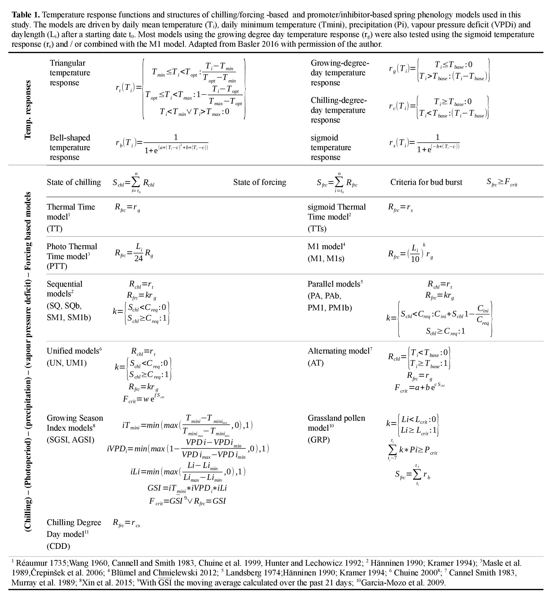

12 APPENDIX S2

Table 2. Site locations of the selection by Melaas et al. (2016) of deciduous broadleaf forests located centrally within the US deciduous broadleaf forest biome.
| PhenoCam site name | latitude (decimal degrees) | longitude (decimal degrees) |
|---|---|---|
| harvard | 42.537800 | -72.171500 |
| bartlettir | 44.064600 | -71.288100 |
| acadia | 44.376944 | -68.260833 |
| mammothcave | 37.185833 | -86.101944 |
| nationalcapital | 38.888180 | -77.069496 |
| dollysods | 39.099529 | -79.427041 |
| smokylook | 35.632529 | -83.943113 |
| upperbuffalo | 35.863732 | -93.493222 |
| boundarywaters | 47.946702 | -91.495506 |
| groundhog | 48.217400 | -82.155500 |
| umichbiological2 | 45.562500 | -84.697600 |
| queens | 44.565000 | -76.324000 |